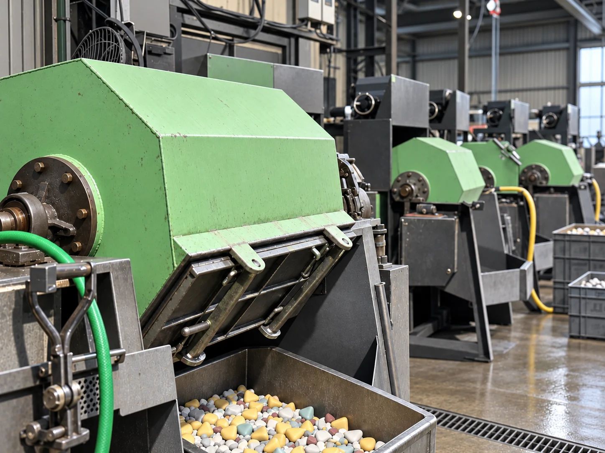
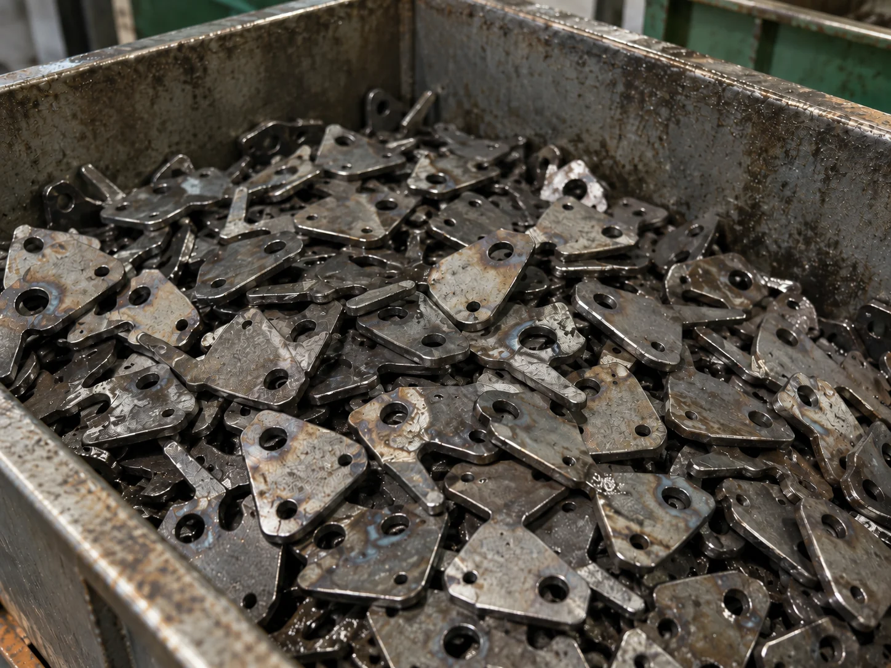
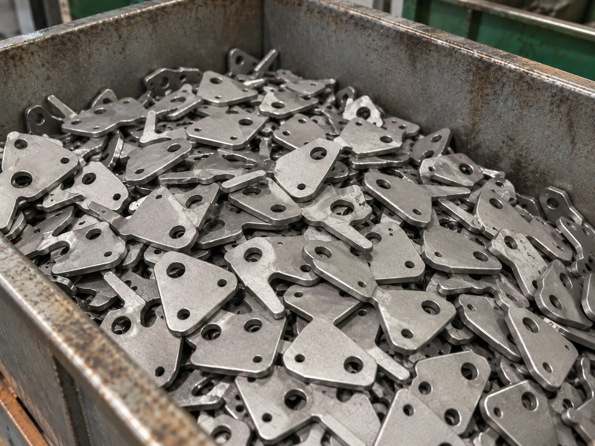
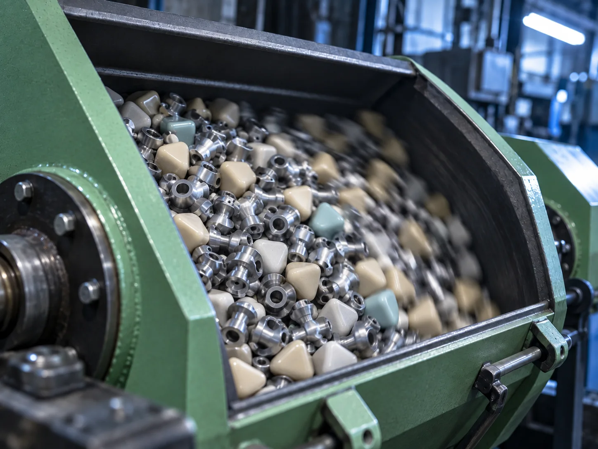
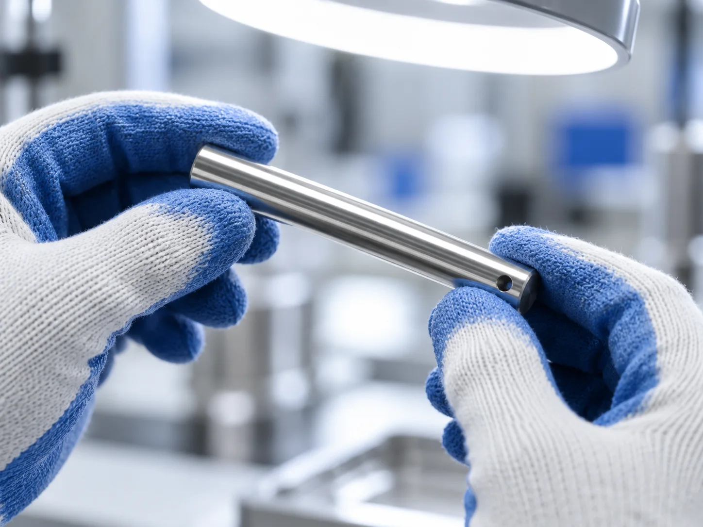
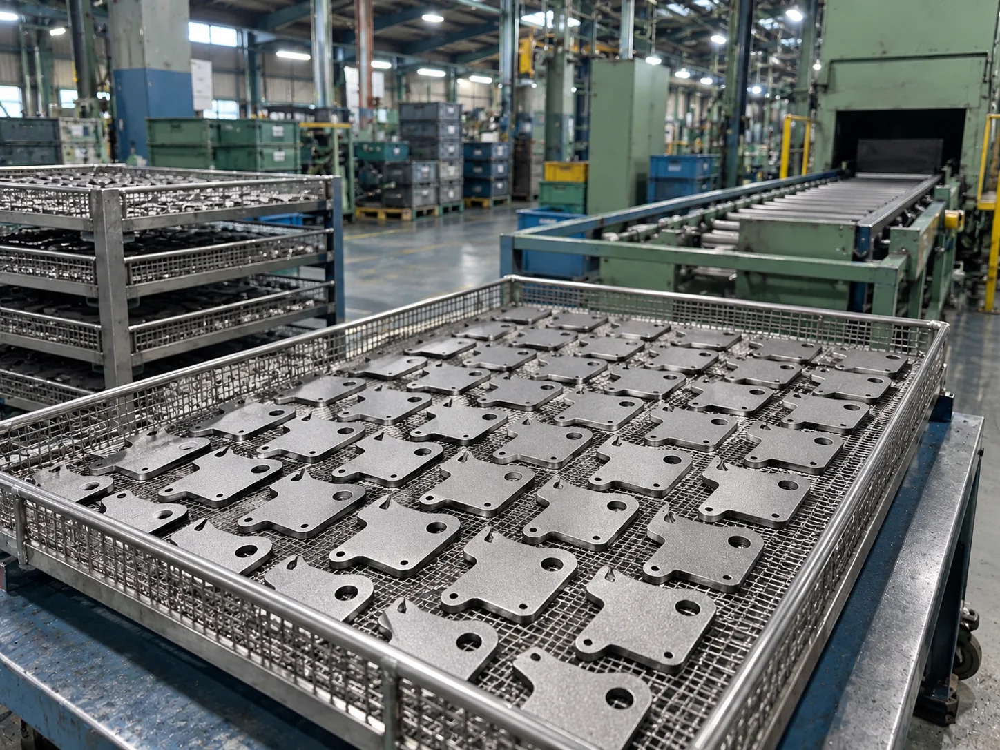
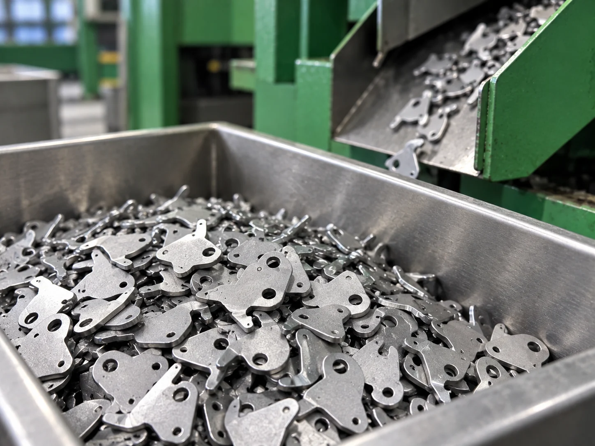

光沢仕上げ
加工前の油分や汚れ、焼けを取り除きながら表面を整え、加工前後で見た目の違いが分かる仕上がりを目指します。
金属部品のバリ取り、スケール除去、脱脂、光沢仕上げ、メッキ下地、防錆まで。
品物の材質や形状、その後の工程に合わせて、回転式・振動式のバレル加工を使い分けています。小ロットの加工にも対応します。

バレル加工は、金属部品と研磨メディア、コンパウンドを機械の中へ入れ、回転や振動によって互いに作用させながら表面を整える加工です。
大きく削り込むのではなく、部品同士やメディアとの接触を利用して、バリを丸めたり、焼き入れ後のスケールや油分を取り除いたり、表面に光沢を出したりします。
サンエイが担う工程は、成形や熱処理を終えた部品がメッキや組み立てへ進む前の表面処理です。機械チェーン、マテハン設備、立体駐車場、エレベーター関連などに使われる、さまざまな形状・大きさの金属部品を扱っています。
加工前の油分や汚れ、焼けを取り除きながら表面を整え、加工前後で見た目の違いが分かる仕上がりを目指します。
材質、形状、大きさ、求める仕上がりに合わせて、硬さや形の異なる研磨メディアを選定します。
品物の状態や加工目的に応じてコンパウンドを選び、長年の経験をもとにメディアとの組み合わせを調整します。
焼き入れ後の焦げやスケール、油分が残った状態から、バレル加工によって表面を整え、脱脂・光沢を出した状態まで。加工前後の違いを視覚的に確認できます。


品物の材質や形状、その後の工程に合わせて、次の処理に対応しています。

01切断や加工後に残る返りや角を丸め、焼き入れ後の焦げ、スケール、不純物などを取り除きます。

02部品に付着した油分や汚れを落としながら、表面の状態を整えて光沢を引き出します。

03メッキが付きやすい表面状態へ整え、後工程へつなぎます。
必要に応じて防錆油の塗布、洗浄、脱水まで行い、搬送時の状態も考慮して仕上げます。

05少量の部品でも、品物ごとに研磨メディアとコンパウンド、加工条件を設定して加工します。試作や少量生産、単発のご依頼にも対応します。
品物、研磨メディア、コンパウンドをバレル機へ投入し、材質・形状・加工目的に合わせて条件を設定します。
回転式または振動式の機械を使い、必要な処理を行います。
必要に応じてコンパウンドを入れ替え、洗浄や仕上げ、防錆油の塗布や脱水を行います。
加工後は品物とメディアを選別し、目視で仕上がりと数量を確認します。
回転によって品物とメディアを動かし、相互の接触を利用して加工する方式です。
振動によって品物とメディアを流動させる方式。対象品に応じて回転式と使い分けます。